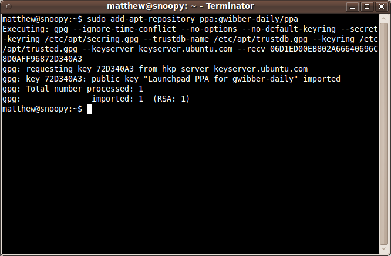

To start installing and using software from a Personal Package Archive, you first need to tell Ubuntu where to find the PPA.
Important: The contents of Personal Package Archives are not checked or monitored. You install software from them at your own risk.
If you're using the most recent version of Ubuntu (or any version from Ubuntu 9.10 onwards), you can add a PPA to your system with a single line in your terminal.
Step 1: On the PPA's overview page, look for the heading that reads Adding this PPA to your system. Make a note of the PPA's location, which looks like:
ppa:gwibber-daily/ppa
Step 2: Open a terminal and enter:
sudo add-apt-repository ppa:user/ppa-name
Replace ppa:user/ppa-name with the PPA's location that you
noted above.
Your system will now fetch the PPA's key. This enables your Ubuntu system to verify that the packages in the PPA have not been interfered with since they were built.
Step 3: Now, as a one-off, you should tell your system to pull down the latest list of software from each archive it knows about, including the PPA you just added:
sudo apt-get update
Now you're ready to start installing software from the PPA!
Step 1: Visit the PPA's overview page in Launchpad. Look for the heading that reads Adding this PPA to your system and click the Technical details about this PPA link.
Step 2: Use the Display sources.list entries drop-down box to select the version of Ubuntu you're using.
Step 3: You'll see that the text-box directly below reads something like this:
deb http://ppa.launchpad.net/gwibber-daily/ppa/ubuntu jaunty main
deb-src http://ppa.launchpad.net/gwibber-daily/ppa/ubuntu jaunty main
Copy those lines.
Step 4: Open a terminal and type:
sudo gedit /etc/apt/sources.list
This will open a text editor containing the list of archives that your system is currently using. Scroll to the bottom of the file and paste the lines you copied in the step above.
Save the file and exit the text editor.
Step 5: Back on the PPA's overview page, look for the Signing key heading. You'll see something like:
1024R/72D340A3 (What is this?)
Copy the portion after the slash but not including the help link; e.g.
just 72D340A3.
Step 6: Now you need to add that key to your system so Ubuntu can verify the packages from the PPA. In your terminal, enter:
sudo apt-key adv --keyserver keyserver.ubuntu.com --recv-keys
72D340A3
Replace 72D340A3 with whatever you copied in the step 5.
This will now pull down the PPA's key and add it to your system.
Step 7: Now, as a one-off, you should tell your system to pull down the latest list of software from each archive it knows about, including the PPA you just added:
sudo apt-get update
Now you're ready to start installing software from the PPA!
Read more about Personal Package Archives in our help wiki.